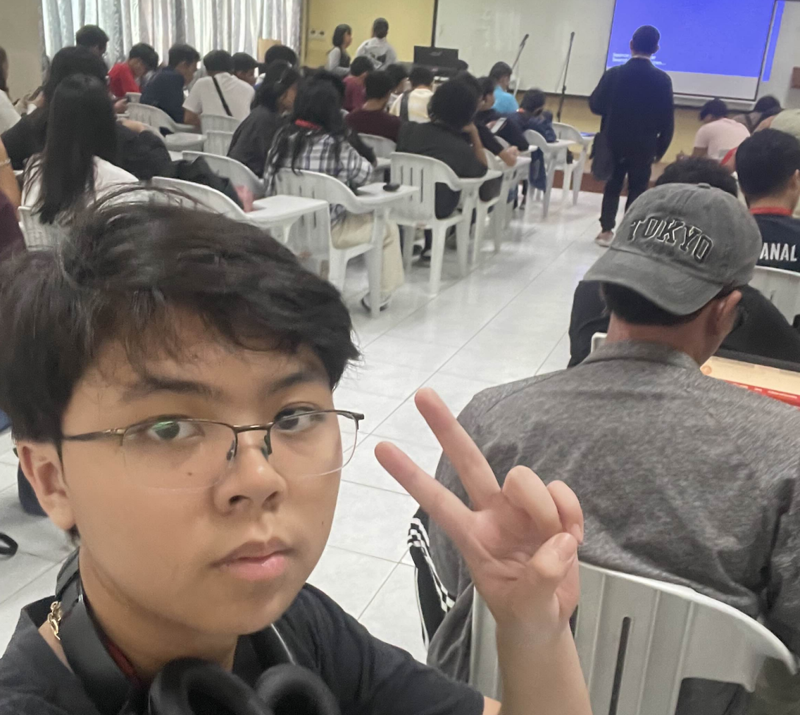

Role: Participant
On August 22, 2024 from 8:00 to 11:00 AM, Miller Solutions Development Inc. held an Industry Lecture at ATA
Hall, entitled “Designing Intuitive User Experience: Key UI/UX Strategies”. The speakers of this lecture
were alumni from Silliman who now worked at Miller, Sheen Glaize Balatero and Trisha Dominyk Alvarez,
their specialty of course being in UI and UX. Aside from that, I was joined by the majority of the CCS
freshmen who were invited to this event to hear the experiences of CCS graduates.
Going into this lecture, I didn’t actually know what to expect. I had an idea of what UX and UI
was, but
I didn’t know what to expect in terms of the actual content of the lecture. The lecturers were actually
very knowledgeable about their subject and were able to relay this information to us in a relatable and
understandable way. Like a lot of the events in the first week of school, I assumed it would be an
uptight atmosphere, but it was actually a rather social experience. At the end of the program, we were
tasked to create a UI for a navigator app to enter in a contest, which we were to do with a group or a
partner.
I feel this event taught me what to expect in the future, what challenges may be present when I
am
applying my skills and knowledge, as well as provided me with some advice on overcoming these challenges
and obstacles. It inspired me to look at user interface in a more practical light, which I think should
help me in my future endeavors when I need to utilize my skills professionally.
Because of this activity, I am a more knowledgeable student of my college, and I have more
confidence in
applying my skills.

×